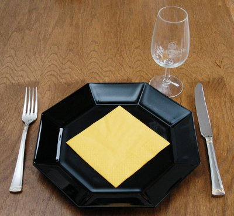

| Zutaten für 4 Personen: | |
| 3 Tassen | Risotto-Reis |
| 4 | Knoblauchzehen |
| 1 | Zwiebel |
| 300 g | Tintenfische |
| 300 g | Krevetten |
| 300 g | Vongole |
| 300 g | Fischfilets |
| Olivenöl | |
| 400 g | Tomaten |
| 3 Tassen | Weisswein |
| 4 Tassen | Bouillon |
Die fein gehackte Zwiebel und Knoblauchzehen im Öl dämpfen, die in Stückchen geschnittenen Tomaten, die fein geschnittenen Calamares, den Wein zugeben und alles 15 Minuten köcheln lassen. Die Bouillon und den Reis hinzufügen. Kochen bis der Reis al dente ist. Die Vongole, Krevetten und die fein zerstückelten Fischfilets zufügen und noch weitere 5 Minuten ziehen lassen.
Christmas Recipes of a Magazine
Kommt ganz ordentlich. Hat nach Paella geschmeckt. RE, 3.4.2000
@LINKBACK_TAG@ @WAKELOCK@